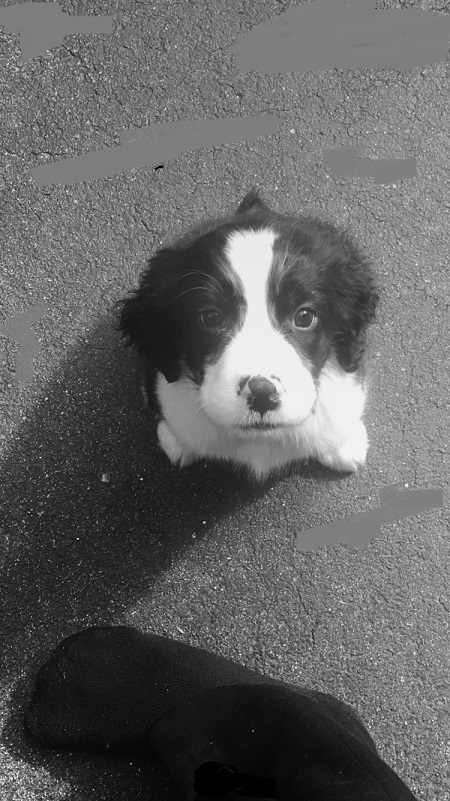

The Puppy
Remy is a very fun, loving puppy. He may pee on the porch every once in a while, but he means well. He is a pure bred springer spaniel. He rather be biting your fingers than playing with a tennis ball like his brother, Tucker. However, Remy is a snuggle bug if he is tired. I had given him the nickname "nugget" because when I first saw him, he was that small and adorable. His nose is still slowly filling in black, and he gets nervous on carpets.